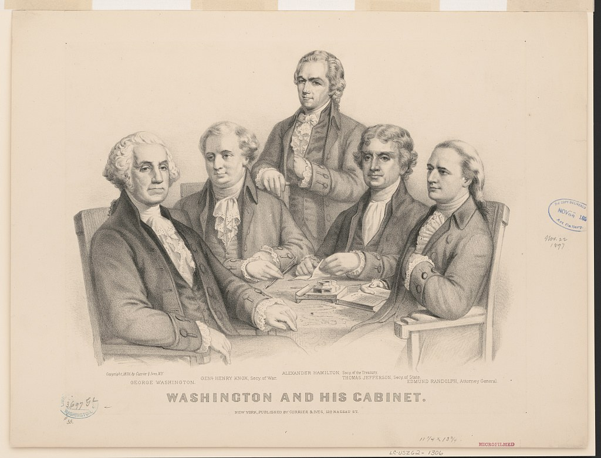
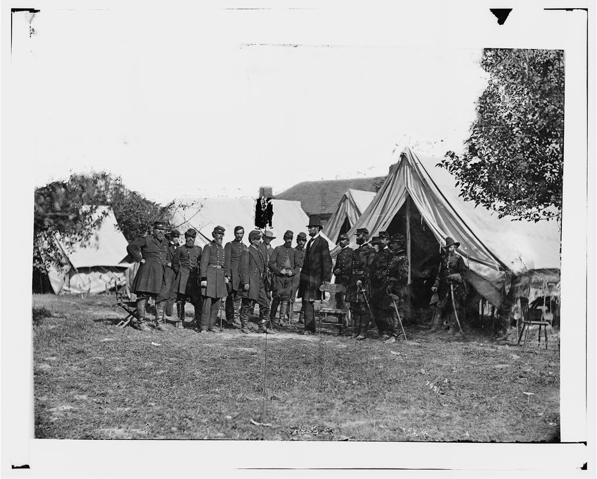
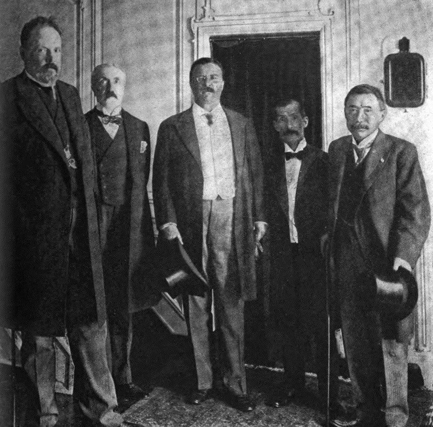
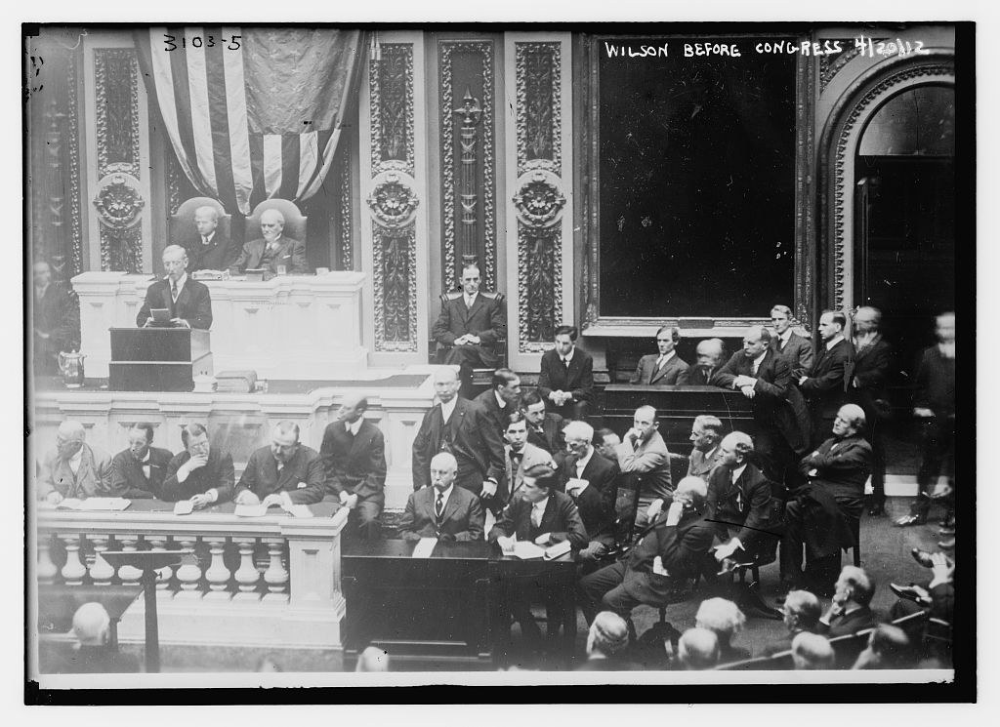
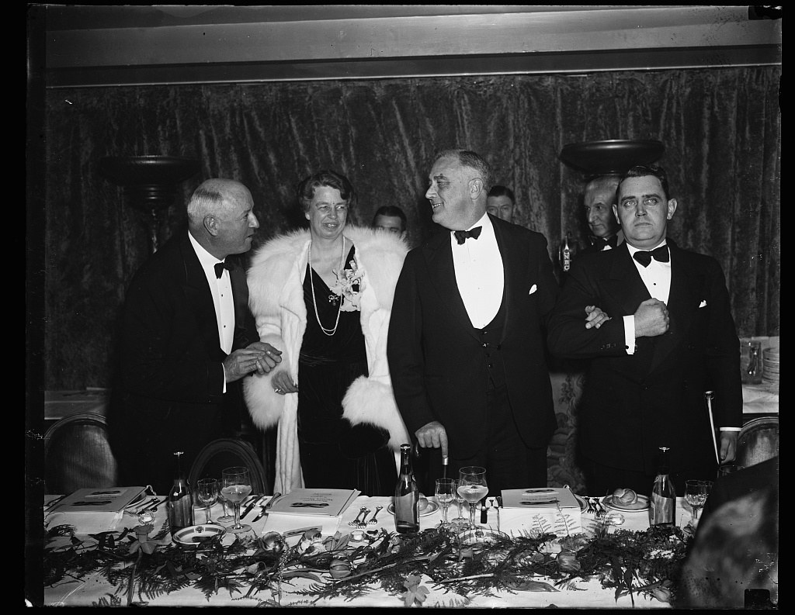
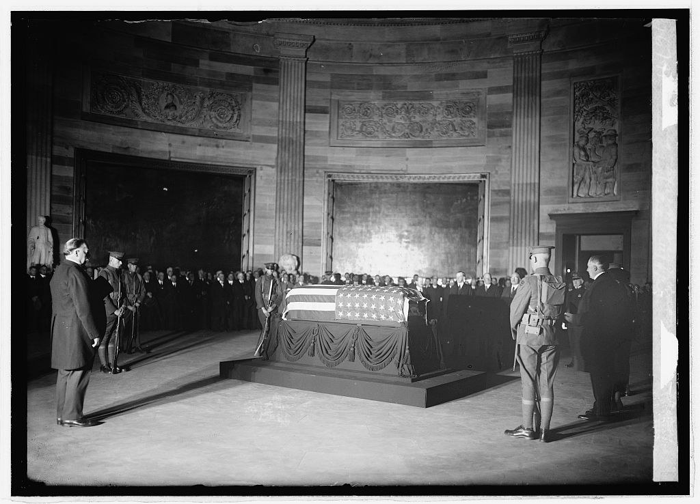

LESSON 2.3 / THE ENERGETIC EXECUTIVE
Presidential Roles
One president, many roles
Presidents have several responsibilities. Some come directly from the Constitution; others developed through political practice. These roles describe the jobs presidents perform. Presidential tools describe how they carry out those jobs.
| Presidential role | Class definition | Example |
|---|---|---|
01Chief executive | The president leads the executive branch and directs federal departments and agencies as they carry out federal laws. | Directing federal agencies to organize disaster assistance. |
02Commander in chief | The president leads the U.S. armed forces and directs military operations. Congress has the power to declare war and control military funding. | Directing a military operation to evacuate Americans overseas. |
03Chief diplomat | The president leads U.S. relations with other countries, working with foreign leaders and negotiating international agreements. | Negotiating an agreement with another country. |
04Legislative leader | The president proposes policy goals and works to persuade Congress to pass laws that advance those goals. | Urging Congress to pass an education bill. |
05Party leader | The president promotes the political party’s goals and helps its candidates win elections. | Campaigning for a candidate from the president’s party. |
06Head of state | The president represents the United States at ceremonies, celebrations, and moments of national mourning. | Speaking at a memorial after a national tragedy. |